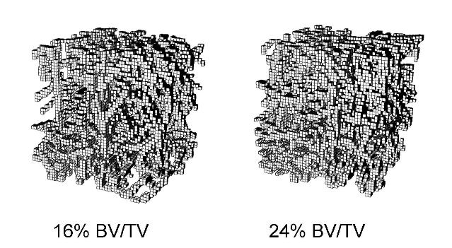

Generation of virtual FE models of bone microstructure
|
The group’s research has also developed algorithms to generate virtual finite element models that mimic bone (i.e. have similar micro-architecture and mechanical behaviour) but are created computationally. These will generate knowledge to relate micro-architecture to mechanical properties for osteoporotic bone. |
